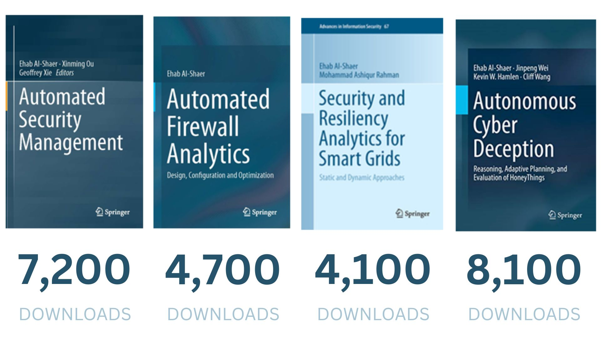

Dr. Ehab Alshaer
Distinguished Research Fellow
Institute of Software Research (ISR) and Faculty Member of CyLab,
School of Computer Science
Carnegie Mellon University
Office: TCS Building, Office# 423, Pittsburgh, PA
Office Phone: (412) 268-7899
Email: ehab@cmu.edu
